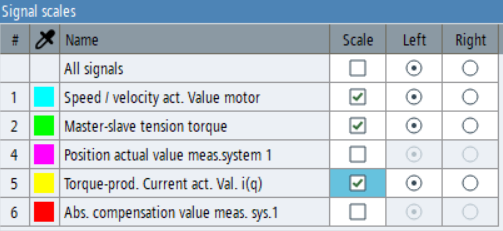

You can use the signal scale widget to configure the visibility and position of the signal scales in the trace diagram. It can be opened via the context menu and is dockable.
The table lists the signals that are currently visible in the trace diagram. The content is updated when the visibility of the signals changes.
The check boxes for scale visibility are only relevant if the "Selected scales" operating mode is active in the context menu. In this mode, you can individually configure which scales should be visible.
In the operating modes "Scales of all signals" and "Scale of selected signal", the check boxes for scale visibility are hidden, but their status is retained and restored when the "Selected scales" mode is reactivated.
The "Left" and "Right" option buttons control on which side of the trace diagram the vertical scale is displayed. In the "Selected scales" operating mode, only the option buttons where the scale is visible are active. In the other two modes, all option buttons are always active.
The first row of the table contains settings that are applied to all scales. If you activate the "Scale" check box in the first row, all scales will be visible. If all scales are visible, deactivating the "Scale" check box in the first row turns all scales invisible. If you select the "Left" or "Right" option button in the first row, the position of all scales changes.
